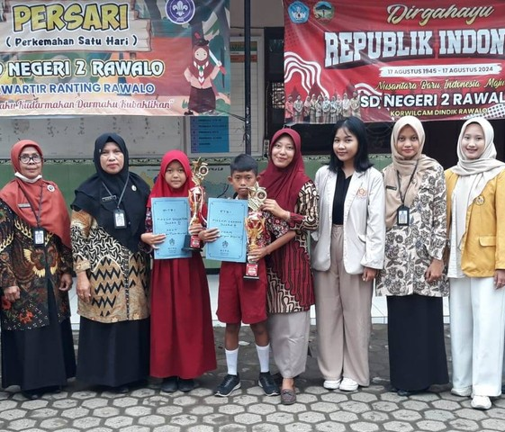
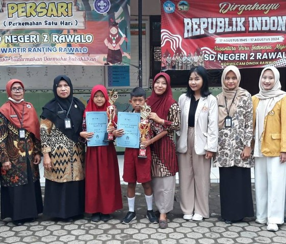

Melukis Pengalaman Secara Inovatif di Kampus Mengajar 8
Pembelajaran yang tidak hanya tentang buku dan papan tulis, namun berasal dari pengalaman
Sumber: gumparan.com
Pembelajaran yang tidak hanya tentang buku dan papan tulis, namun berasal dari pengalaman
Sumber: gumparan.com
Pohon Refleksi adalah sebuah konsep sederhana namun efektif untuk mengumpulkan pendapat dan komentar siswa mengenai pengalaman belajar mereka.
Sumber: kompasiana.com
"We do not learn from experience we learn from reflecting on experience.

Sumber: news.detik.com